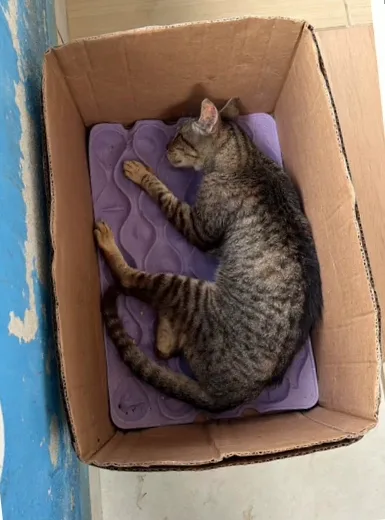
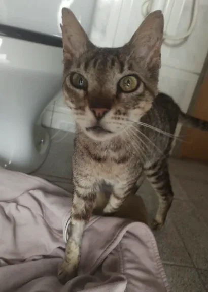

Um ponto de apoio na estrada do Caminho da Fé, na cidade de Potim-SP. Oferecendo descanso, oração e acolhimento a quem passa por aqui.


Nossa gatinha acolhida precisa de uma cirurgia na patinha, estimada em R$ 4.000. Qualquer ajuda faz a diferença!
Senhor, que me chamaste ao caminho da fé, sustenta meus passos, fortalece meus pés...
Desculpe Senhor pela relação grosseira que faço, mas sou obrigado a Te dizer que meu cajado me leva a Ti...
Nossa Senhora Aparecida abençoe este ciclista peregrino. Agora é cabeça baixa e foco no pedalar...